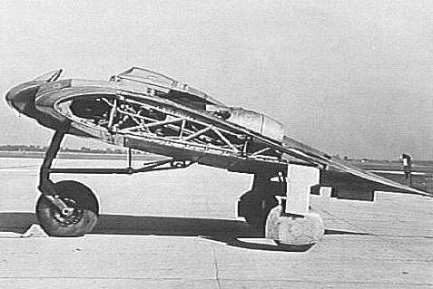
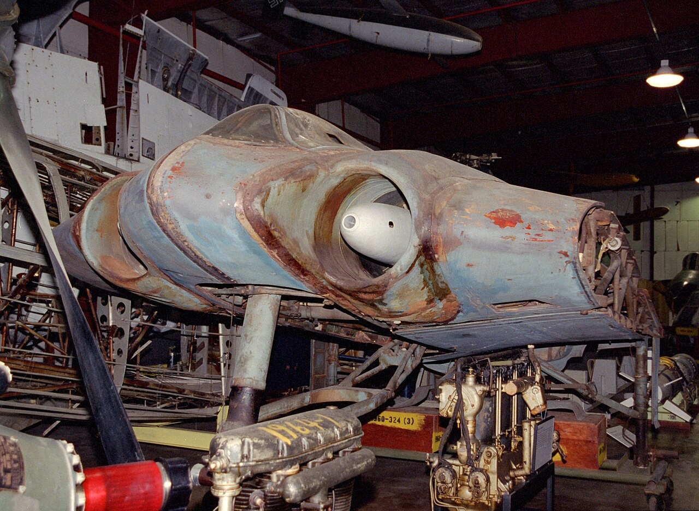

Keep Exploring
More Classified Aircraft
The Ho 229 is one of fourteen classified and experimental aircraft covered in The Secret Skies archive.
Two self-taught glider designers, Walter and Reimar Horten, convinced a desperate Luftwaffe leadership to fund the strangest fighter design of the Second World War: a tailless, jet-powered flying wing built almost entirely for aerodynamic efficiency. Decades after the war, engineers at Northrop Grumman built a full-scale replica and found the design may have carried real, if unintentional, stealth properties — a discovery that took more than sixty years to confirm.
Walter and Reimar Horten weren't career aerospace engineers — they were glider enthusiasts who'd spent years building tailless designs as a hobby, convinced flying wings were simply more efficient than any conventional airframe.
Both brothers served as Luftwaffe pilots, but their real passion was aircraft design, built on years of privately constructed flying-wing gliders through the 1930s. Reimar, the more technically driven of the two, was largely self-taught in aerodynamics rather than formally credentialed, which made his later achievement even more unusual: convincing the Reich Air Ministry to fund a jet-powered version of a concept most conventional engineers still treated as a curiosity.
Their pitch rested on a simple aerodynamic argument: a tailless flying wing produces far less drag than a conventional fuselage-and-tail design, because there's no separate tail structure creating extra resistance. Less drag meant more range and more speed from the same engines — exactly the tradeoff a fuel- and time-strapped Luftwaffe needed by 1943.

The Horten brothers' private project became an official program only because it happened to fit an increasingly desperate specification from the very top of the Luftwaffe.
In 1943, Reichsmarschall Hermann Göring — commander-in-chief of the Luftwaffe, not Hitler personally, despite a common misconception repeated in some retellings — issued a design requirement nicknamed “3×1000”: a bomber able to carry a 1,000 kilogram payload over 1,000 kilometers at 1,000 km/h. No conventional German bomber design could meet all three targets at once.
The Hortens argued their low-drag flying wing could hit the range and speed targets that defeated conventional designs. Göring's ministry agreed, ordering the addition of two 30mm cannons and allocating roughly half a million Reichsmarks to build three prototypes — the project that became the H.IX, later redesignated Ho 229 once handed to Gothaer Waggonfabrik for production.
The result looked like nothing else flying in 1944 — a jet-powered wing with no separate fuselage or tail at all.
The Ho 229 combined a tailless flying-wing airframe with two Junkers Jumo 004 turbojet engines buried inside the wing itself — the same engine type used on the Messerschmitt Me 262. Its estimated top speed and range comfortably exceeded the 3×1000 target, at least on paper, and its shape anticipated flying-wing bomber designs that wouldn't reappear in a fielded aircraft for another forty years, with the American B-2 Spirit.
We didn't design it to be invisible. We designed it to be efficient. That it might also be hard to see on radar never entered our thinking at the time.
— Characterization of Reimar Horten's later recollections about the H.IX/Ho 229 design processFor decades, aviation historians speculated the Ho 229's shape and materials might have reduced its radar signature. In 2008, Northrop Grumman actually tested the theory.
Ahead of a 2009 National Geographic documentary, Northrop Grumman engineers built a full-scale, flyable-quality plywood reproduction of the Ho 229 V3 prototype and tested it at the company's outdoor radar cross-section range in California, using electromagnetic frequencies matching the WWII-era British Chain Home radar network the Ho 229 would have faced in service.
The results showed a real, if modest, reduction in detectable range compared to a conventional fighter like the Messerschmitt Bf 109 of the same era — not true invisibility, and not proof the Hortens intentionally engineered stealth, but a genuine, measurable head start on radar-evading shape theory more than sixty years before anyone confirmed it.
By April 1945, the war was ending faster than the Ho 229 program could finish it — and the aircraft itself became a prize.
Only one of the three ordered prototypes, designated V3, was far enough along to be seized intact. American forces from the VIII Corps, U.S. Third Army captured it at the Gothaer Waggonfabrik works in Friedrichroda, Thuringia in April 1945, as part of a broader Allied operation specifically tasked with recovering advanced German aviation technology before Soviet forces — who occupied the region shortly afterward — could reach it.
The V3 prototype was shipped to the United States for evaluation, eventually passing to the Smithsonian, where it remains today, undergoing painstaking conservation rather than full restoration to preserve its original 1945 materials.
The Ho 229 never flew combat, and it likely couldn't have changed the war's outcome even with more time — but its shape quietly anticipated aviation's next sixty years.

Smithsonian National Air and Space Museum
The only Ho 229 that survives, preserved rather than restored.
Even had the Ho 229 entered squadron service, historians broadly agree it arrived too late, and in far too small numbers, to meaningfully affect the war's already-decided outcome by 1944–45.
Jack Northrop pursued his own flying-wing designs independently in the U.S. around the same era; the concept resurfaced decades later in the B-2 Spirit stealth bomber — built, coincidentally, by the same company that later tested the Ho 229's stealth claims.
The Ho 229 is one of fourteen classified and experimental aircraft covered in The Secret Skies archive.
Every fact in this case file was cross-referenced against at least two independent sources, anchored by Smithsonian and Northrop Grumman engineering records. All links open in a new tab.
The Smithsonian's official collection record on the surviving prototype and its conservation.
The engineering paper documenting Northrop Grumman's 2008 radar cross-section testing of a full-scale Ho 229 reproduction.
Background on the Horten brothers' design philosophy and the aircraft's development history.
Analysis distinguishing the aircraft's real stealth-reducing properties from exaggerated claims of full invisibility.
From Dark Skies, a well-sourced military and aviation history channel.